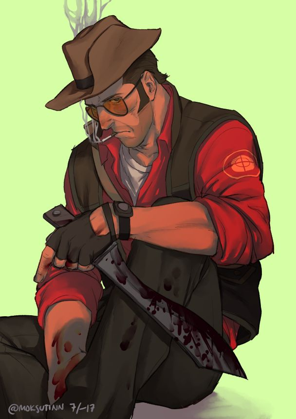

Origen: Australia
Salud: 125 HP
Velocidad: 100%
Originario de la remota Nueva Zelanda y criado en el inhóspito interior de Australia , el Francotirador es un mercenario duro y listo para la acción . Su principal función en el campo de batalla es eliminar objetivos enemigos importantes desde lejos con su rifle de francotirador , capaz de infligir golpes críticos garantizados con un disparo a la cabeza (con algunas excepciones). Es efectivo a larga distancia, pero se debilita a corta distancia, donde se ve obligado a usar su subfusil o su kukri . Por ello, el Francotirador suele posicionarse en terrenos elevados o en lugares de difícil acceso, desde donde puede acorralar fácilmente a los enemigos en puntos estratégicos . Aunque suele ser conocido por eliminar enemigos a distancia de forma instantánea, el Francotirador puede usar el Cazador para acercarse al enemigo. Además, el Sydney Sleeper y el misterioso contenido de Jarate le permiten desempeñar un rol de apoyo al provocar que los enemigos reciban minicríticos .
